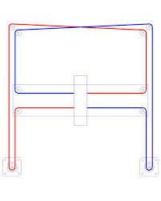
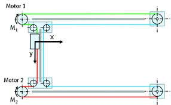
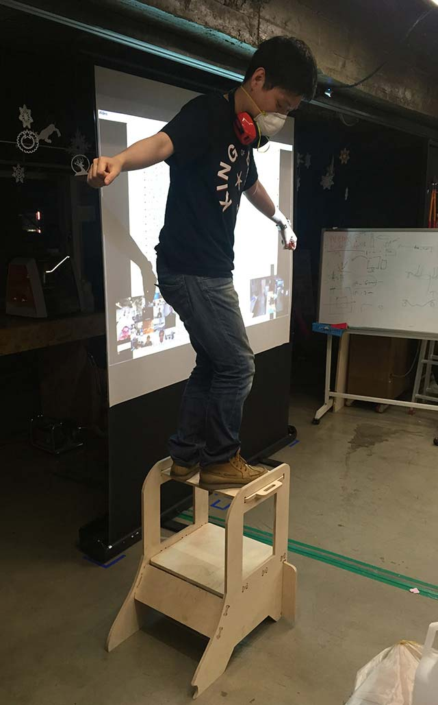
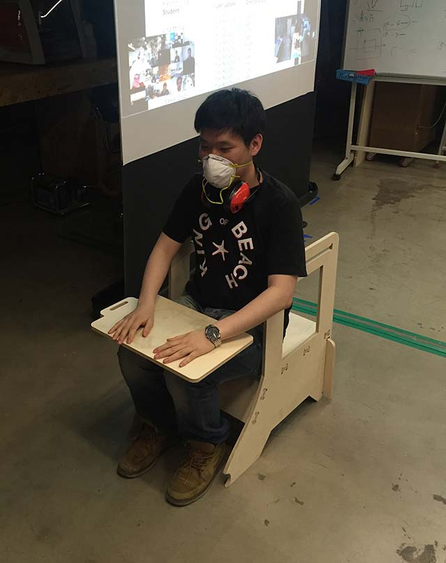
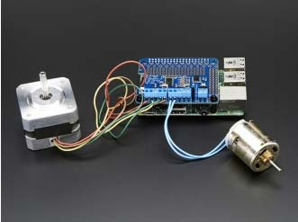
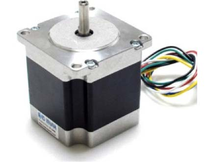
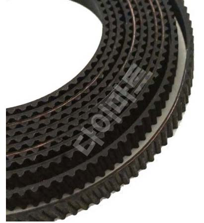
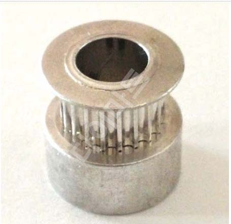

15. Applications and implications
Propose a final project that integrates the range of units covered
What will it do?
Objective of my project is simple device to help people use my device for fun.
Start with a game to build much more bigger thing. There are many things i wanted to learn such as bluetooth module, remote control, wireless network. By thinking thoroughly and looking at the toy crane which i normally see around the theatre’s game zone I thought maybe controlling certain thing from one to the other is very important
 |
 |
CORE-XY MECHANISM |
H GANTRY MECHANISM |
Reason why I’m trying to build this thing is because I get to control in all directions. like 3D printer. Obviously when i need a lot of work done with controlling the stepper motor
My main goal is to make machine move around in 3-axes. In return, I get to make some fun stuff to people around me as well. I'm still not sure how this things going to work so I've found some references of past fab academy studen'ts work. By the looks of it I have to some implementation of CORE-XY or H Gantry motion which I learned from close friends of mine. He had a past experience of making 3D printers so I learned a lot from him. There will be layers obstacles standing on the board with different design to give players difficulties about moving from start to the end. when players can move from one space to the other and make it safe to the final goal will be the winner.
As a matter of fact, I tend to re-use the thing i built from CNC project.
(UPDATE : I got contact with a guy who made 3D printer before, after the final project presentation)
I learned from my countless failures that for my idea I need 'stablized' frame to move objects from one place to the other. Even though I had bearings for smooth movement the smoothness must be applied in every directions. Using core-xy is also a good idea but h gantry like shown has less bearings to be used and It works very similar with core-xy movement. The main point is both movement requires two stepper motors so I think fixing the frame first and then moving the motors must be done. My helper also gave me some idea fixing the frame by making laser-cut sheet which has holes to fix components.
 |
 |
It will be used as an entertainment box for visitors and everyone to enjoy it with controlling touchpad of digital fabricated tool. The player must control the crane to get to the finish point and when the marble is dropped the touch sensor(= sound sensor) is activated to tell it’s game over.
There are may be used it as an entertainment box where people coming to FabLab Seoul can take a try and get to know that these kind of stuff can be made with digital fabrication tools.
Who's done what beforehand?
I’ve seen reference of Ted Hung(local instructor of Taipei) and I think it’s very similar to what I’m trying to do with assignment. There are another type of game invented with (find the video link!!! …. still finding or insert picture)
What materials and components will be required?
 |
 |
Adafruit DC & Stepper motor HAT for Raspberry Pi - Mini Kit (27,600) |
Stepping Motor[SE-SM9K] Holding Torque 9 Kg/cm, (40,000 won) |
 |
 |
Timing belt (1M*6mm) , 2500won($2): |
Gear with 20 teeth(7,200won) |
Where will they come from?
- All SMD Components : Check the FabLab Seoul Inventory and most of the SMD components
- FR4 board : from inventory for making new board
- Input device : artrobot.kr (Korean vendor)
- 3D printer components vendor (3dmart, Korean online store)
How much will it cost?
- In my opinion the the main proportion of the cost will be concentrated on stepper motors and maybe metal frame (If it’s possible i want to recycle the used machines or build with woood or 3D printed frame).
- Working on different on-line market for cheapest and reasonable stepper motors.
What parts and systems will be made?
Input device : touchpad to control movement of at least stepper motors.
Stepper motor : 3 motors controlling the gear for x,y,z axes control
Timing belt and bearings : for movement of middle parts
Wooden Frame : Main outer design of board and
What processes will be used?
1) Controlling stepper motors and maintaining tension of moving gear
2) CNC for making outer wooden frame with press-fit joint. For later on
what tasks need to be completed?
I’m still working on electronic design of my board. I ‘m taking extra hours since I’m failing at least 3 times with electronic production. It’s very important to finish one by one the device whether its input/output to test the outcomes.
Finding gears(pulley) and timing belt is essential. It’s the most important thing to be taken care of, It’s not very recommended as it’s commercial product so I still need to take care of more parts to be made with digital fabrication tool(maybe trying to build the smooth rod for the main frame of the machine)
what questions need to be answered?
- Finishing touch-pad design : Very similar SRM-20 ‘s operating software VPanel. Moving X,Y axis with 4 cursors and Z-axis with up-down cursors.
- Stepper motors moving the frame from origin to the finishing point
What is the schedule?
Try to put scheduling timetable for the last of the project.